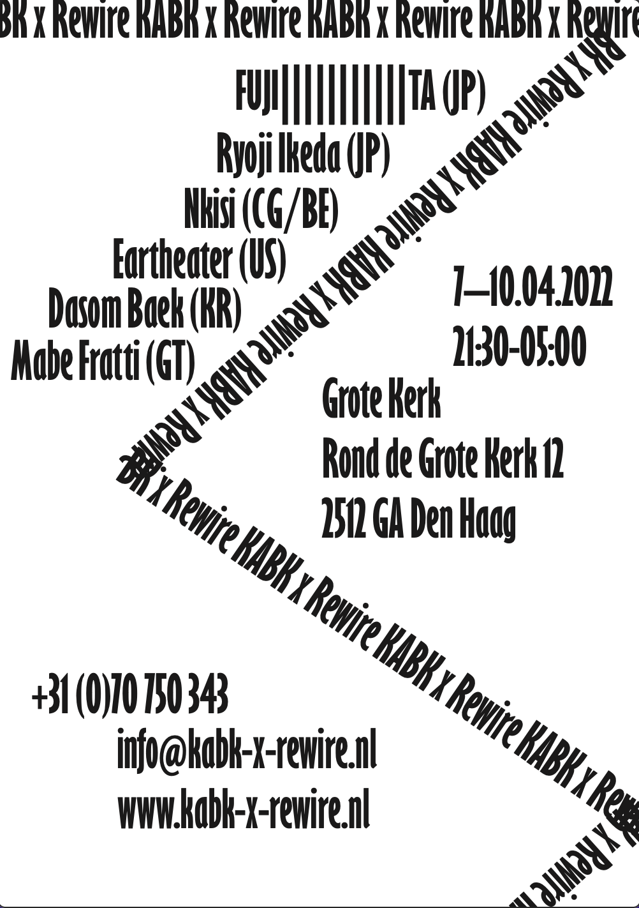

In this chapter, JWS places artists' positions plus corresponding facets of artisthood in line with an exploration of artists' studios. In my own words and experiences, I will walk you through the perspective of a student's position in this school from year 1 to year 3.
The first year is an adventurous exploration of your qualities in
various aspects of graphic design. These qualities are explored with
challenging assignments that appeal to the student’s curiosity and
creativity. Considerable emphasis is placed on open-mindedness and the joy
of working. You will try out different ways of working and acquire an
initial indication of your visual abilities and the value of your ideas.
You will gradually move towards the development of your own visual
language and visions. In the first year, it is important to create a large
body of work that provides confidence and creates resilience that will be
useful during the rest of the programme. In the final assessment, you must
answer the question of whether graphic design is suitable for you, and if
you are suitable for the profession. You should be able to specify clearly
the elements of the profession that are of primary interest to you.
In the second year, you will work on a series of challenging design assignments. The emphasis is on expanding understanding of the profession and strengthening qualities as designers. Ample space is reserved for research. The assignments address a variety of issues, including the concepts of public space and audience groups. There are realistic and fictional, optional and compulsory assignments. During the year, the courses taught are replaced by supervision by different teachers in joint assignments. Each teacher covers a specific area of expertise: Design, Image, Typography or Interaction.
The third year also focuses on complex design assignments. In this year, the emphasis is placed on the relationship between graphic designers and society. This is reflected in the theory programme, the assignments and the internship. One of the points of departure for the course is that you will gain increasing control over your tracks as the programme progresses, and much will be expected of you in the third year.
In Type Design you will get classes from Guido de Boer. Guido
is a master at drawing letters and creating art through calligraphy. etc
etc. This was my feedback from him for this class: You’re telling me that
you’re comparing yourself in the beginning of the block with others and
that made you insecure. That will always make you feel that way since
there’s always somebody ‘better’. It’s not the point. The shift to a more
confident feeling started when you found your fun. This is where the
studying starts. We talked about the brush vs. the pen. That’s a nice
symbol with having control and not. Try to explore this field of not
knowing, not having control. Since that’s where you will surprise
yourself! Your mindset changed after we talked about the difference
between drawing and writing. You started being interested in the unknown
instead of being ‘afraid’ of being in the dark. You started talking with
others and that actually what I like about your function and attitude in
class. You’re great to have around, be aware of that great skill you’re
having. Give space for your own ideas and bring them to life!
Typography

In Typography, you will learn the rules of placing text. Rob van den Nieuwenhuizen, the teacher, will introduce you to all kinds definitions around th "building blocks" of letters. He specifically described Typography as "Typography are the bricks of letters that you have to build and Type design is the process that follows". Our course started with some of Rob's warm words on Teams:
I would like all of you to prepare a few small things before our first class on Monday.
ONE
Choose and bring a physical (and mostly) typographic work (i.e. a book, poster, zine, shirt, object, sticker, packaging, etc.) that was either made by you or by someone else and that you feel represents you.
TWO
Also choose and bring a physical (and mostly) typographic work that represents something that you would like to learn in the (huge) context of art and design. Maybe it’s based on all of the feedback that you have gotten during the three previous blocks, maybe it’s something you always wanted to learn, maybe it’s something you come up with during this weekend.
Basically, we’ll all introduce ourselves and our goals through someone else’s work.
THREE
Please bring scissors / knives, glue, paper tape, pencils/pens, markers, a ruler, any kind of tool that you can use to write or cut something, a few sheets of black and/or colour paper, and your laptops.
Our class will start at 09:00 in PC214. Really looking forward to seeing all of you!
Rob
This was a fun way to start the class and I remember that I brought a Toney's Chocolonely bar because of the packaging. My final feedback for Rob's class the following:
At the start of this block you brought a The New Yorker tote bag and Tony Chocolonely packaging, but especially talked about how you love writing and editing and that you would like to integrate that into your work.
During the Individual Assessments it was great to see that, in a way, even the flyers seemed to talk to each other and to the other projects that you showed for both Typography and Design class. I do think that your work would benefit from some more visual exploration, to broaden that range but to also kind of ‘train’ the tools that you use to eventually tell stories. Maybe experimenting with different scales or even techniques would inform your work differently, just as familiarizing yourself with different artists who work at the intersection of language and visual arts will. Some recommendations: Kenneth Goldsmith (Uncreative Writing), Ryan Gander (Loose Associations), Daniel Eatock, John Baldesarri, Lawrence Weiner, Jenny Holzer, Ed Ruscha, Hamish Fulton, The Guerrilla Girls, Martin Creed, Bob & Roberta Smith, Tracey Emin, Christopher Wool, and more.
Your focus on writing was of course most apparent in the publication. The decision to sort-of bring the cardboard figures in Playtime! to life and to turn them into actual characters with a backstory, was poetic and smart at the same time. The process of writing is very much a design process, and you can feel that in how the object becomes part of the story because of the materials that you choose, because of the binding, size, and so many more elements.
The typography itself, however, often stays a bit at the visual surface. I’m not trying to imply that it should be more illustrative or visually outspoken, but it seems like it’s just the carrier of your story. Could the textual writing and the visual writing be more connected? Could the writing be more integrated in your visual output so that the two become completely intertwined? Could you see all visual decisions as part of that story; not just as visual captions or sort-of illustrations to it but as actual words, sentences, and even commas? I think that is something that would strengthen your work even more and make it richer, visually.
Thank you so much for your great energy in class and for all the hard work! It’s much appreciated
Have a great Summer and a wonderful second year!
Type Design In Type Design you will get classes from Guido de Boer. Guido
is a master at drawing letters and creating art through calligraphy. etc
etc. This was my feedback from him for this class: You’re telling me that
you’re comparing yourself in the beginning of the block with others and
that made you insecure. That will always make you feel that way since
there’s always somebody ‘better’. It’s not the point. The shift to a more
confident feeling started when you found your fun. This is where the
studying starts. We talked about the brush vs. the pen. That’s a nice
symbol with having control and not. Try to explore this field of not
knowing, not having control. Since that’s where you will surprise
yourself! Your mindset changed after we talked about the difference
between drawing and writing. You started being interested in the unknown
instead of being ‘afraid’ of being in the dark. You started talking with
others and that actually what I like about your function and attitude in
class. You’re great to have around, be aware of that great skill you’re
having. Give space for your own ideas and bring them to life!
Typography In Typography, you will learn the rules of placing text. Rob van den Nieuwenhuizen, the teacher, will introduce you to all kinds definitions around th "building blocks" of letters. He specifically described Typography as "Typography are the bricks of letters that you have to build and Type design is the process that follows". Our course started with some of Rob's warm words on Teams:
I would like all of you to prepare a few small things before our first class on Monday.
ONE
Choose and bring a physical (and mostly) typographic work (i.e. a book, poster, zine, shirt, object, sticker, packaging, etc.) that was either made by you or by someone else and that you feel represents you.
TWO
Also choose and bring a physical (and mostly) typographic work that represents something that you would like to learn in the (huge) context of art and design. Maybe it’s based on all of the feedback that you have gotten during the three previous blocks, maybe it’s something you always wanted to learn, maybe it’s something you come up with during this weekend.
Basically, we’ll all introduce ourselves and our goals through someone else’s work.
THREE
Please bring scissors / knives, glue, paper tape, pencils/pens, markers, a ruler, any kind of tool that you can use to write or cut something, a few sheets of black and/or colour paper, and your laptops.
Our class will start at 09:00 in PC214. Really looking forward to seeing all of you!
Rob
Image In Image, you will have classes with Michiel